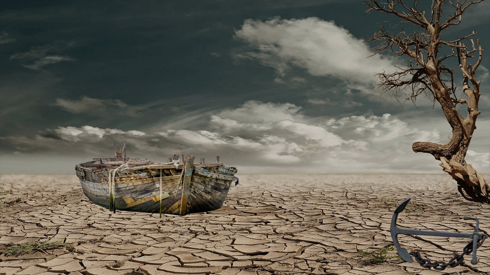
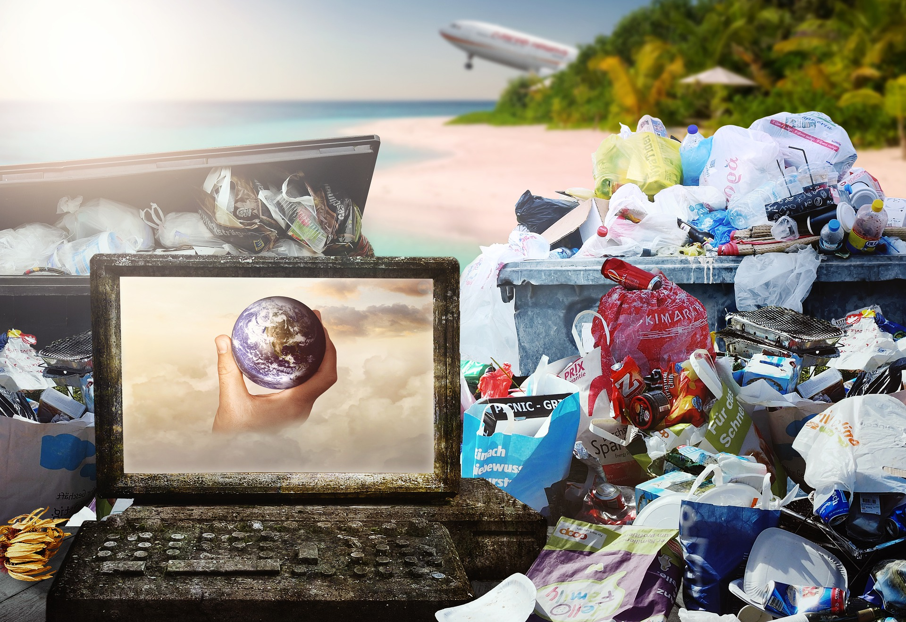
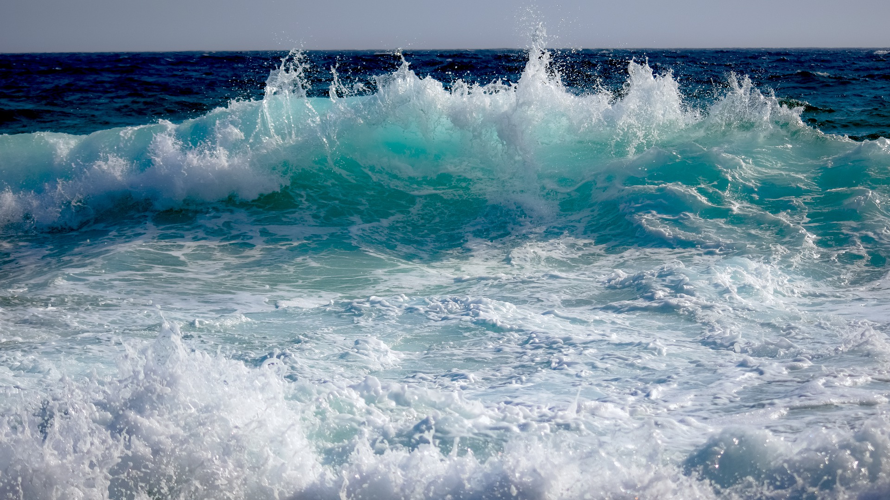
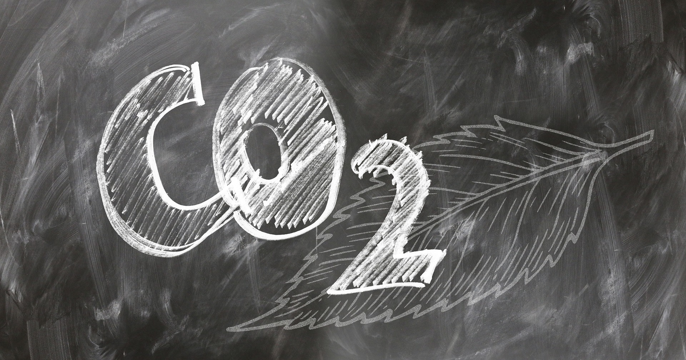
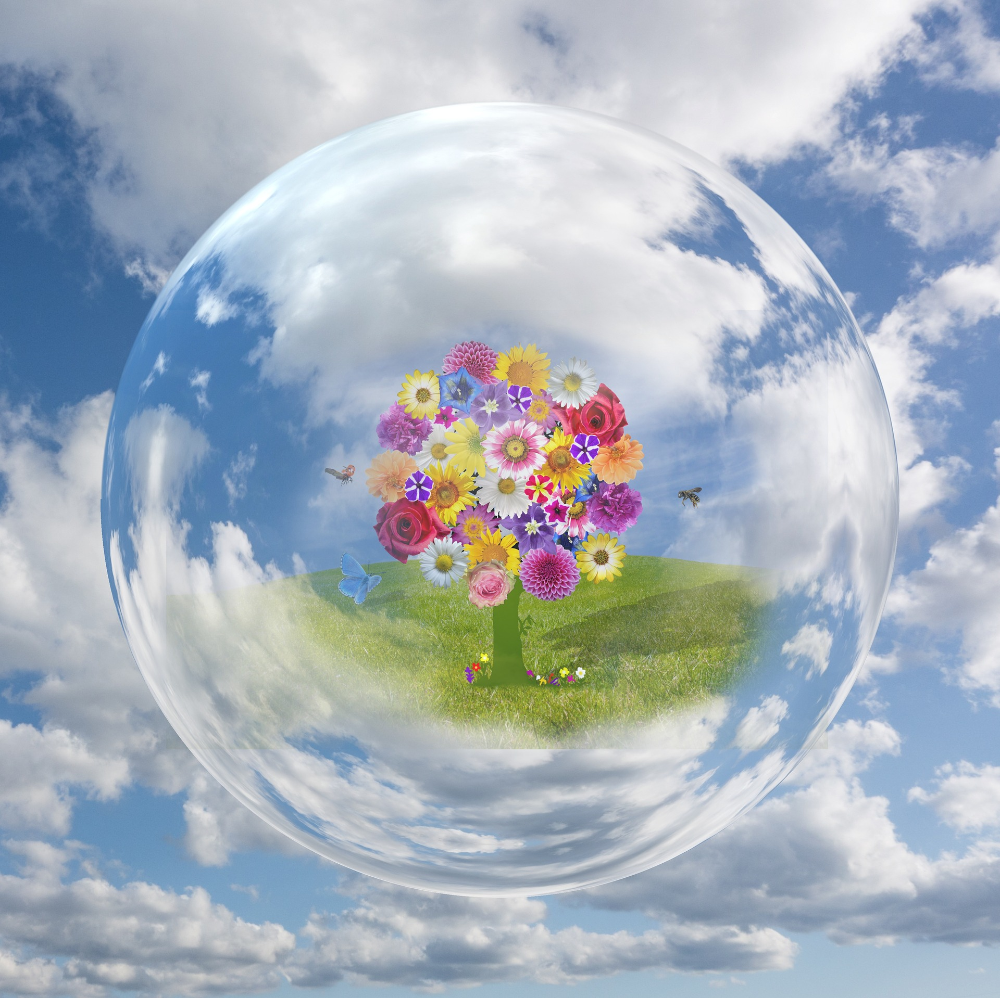
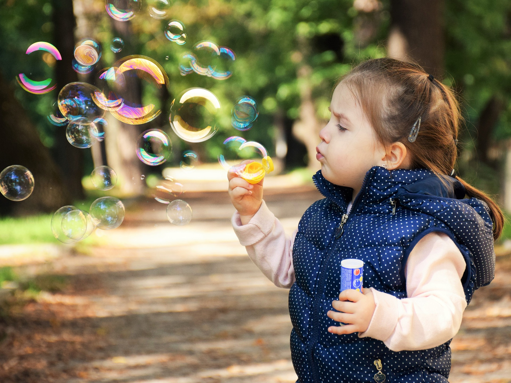

Why protect the Earth
Primarily, we all should be aware of the term environment. All living things survive within their own favourable zones of the environment - thus the environment is not something that can be neglected easily without caring for it. Indeed, the Lord hath created a flexibility in the environment for all of organisms existing on Earth. Although the environment can continue to survive in its natural state, human intervention has caused extensive destruction in many ecosystems. It is very important for us to protect our environment, so that we can continue to live on this planet - in a healthy and safe atmosphere.
We should have to protect the environment not for only living creatures, but for the plants and trees that provide even more benefits to us directly - they provide us with oxygen which we need to breathe. Industrial and developed countries are also facing threats of being polluted and affected by the detrimental environmental impact made by human actions.
Waste disposed in our water sources, is brutalizing aquatic life and pollution from factories, our usage of plastic bags, and pollutants released from vehicles, are all all factors that are contributing to climate change. Many of Earth’s resources are being depleted by humans, the results of which are hazardous to lives of many globally.
10 Reasons Why We Need to be Environmentally Conscious
1. The environment helps in protecting the ecosystem - Changes affecting the ecosystem put multiple species in the danger of extinction necessitating the need
of protecting the environment. Ecosystems are deeply connected to one another.
2. Protecting the environment protects humanity - Pollution is one of the most hazardous factors affecting the environment.
It affects the quality of food leading to the ingestion of toxic substances.
.
3. Humans have a moral obligation to preserve nature and its features - Humans are responsible for taking care of the environment.
Protecting the environment would be an act of fulfilling their compulsions.
4. Biodiversity is a significant part of life in the world - Biodiversity not only consists of the animals living
of earth but also the forests, grasslands and tundra, which are significant features in maintaining the life-cycle of the eco-system.
5. Forests provide raw materials for various consumer products - Forests are a significant part of the environment,
which helps in providing various raw materials such as food, rubber, timber and essential oils. Forest management means availability and sustainable use of these natural resources.
6.Forests provide habitats for a variety of species: Almost half of the species live in forests thus destroying the forests would lead to the destruction of the ecosystem at large.
7.The way in which a person protects the environment reflects their personality: Just as the way you treat other people reflects your personality, the way you treat the environment reflects who you actually are. A good person will treat the environment responsibly. So treat the environment well and prove that you indeed have a good personality.
8.It is a way to give to your generation: One will be happier in life if you focus on giving rather than receiving. Treating the environment well is one way to give to the others in your generation. By treating the environment well, you make the planet a better place to live for everyone. You help yourself and others to have higher quality of life.
9.It is a way to give to the future generations:Not only protecting the environment benefits people in current generation; it will also benefit people in many generations to come. This planet is our legacy to the future generations..
10. It is a way to give back to the planet: Whether we realize it or not, we can only live by consuming resources provided by this planet. Take energy for instance. We only get the energy by utilizing resources like oil and coal provided by the earth. This is not to mention basic needs like food and water.
Photo gallery

Drought is a prolonged dry period in the natural climate cycle that can occur anywhere in the world.

Up to 550,000 wild animals around the world are suffering at the hands of a cruel and relentless industry.

Much of the planet is swimming in discarded plastic, which is harming animal and possibly human health.

The ocean influences weather and climate by storing solar radiation,
distributing heat and moisture around the globe, and driving weather systems.

The Climate Transparency Report says that CO2 will go up by 4% across the G20 group this year

Earth's atmosphere does many important tasks for us—it shields us from UV radiation,
generates weather, and is the very air we breathe

Climate change is already a direct challenge to children’s rights and well-being.